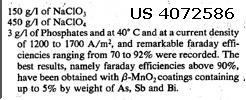

|
Manganese Dioxide Anodes are made by painting a 50% solution of Manganese Nitrate onto Titanium and baking at around 380°C for approx. 10 minutes and repeating this procedure a number of times. They are great Chlorate makers. They do not seem to last long in a Perchlorate cell. They are inclined to leave a pink colour in the electrolyte which may have implications for pryotechnics.
US Patent 4444642 states that Manganese Dioxide (and LD) can be put onto MMO.

U.S. Patent No. 4072586 deposites Mn Dioxide onto bare etched Ti and it has been shown (see link below) that there is no need to put any coats between Mn Dioxide and Ti as Mn Dioxide is compatable with Ti. In fact Co Oxide appears to be a disadvantage giving an Anode with a shorter life time.
This patent also states that doped Mn will make Perchlorate efficiently. It does not mention wear rates. XENOID has done some work with Bi + Mn Dioxide Anodes in Perchlorate cells.
The Manganese Dioxide electrode will be damaged if left in a cell with the power not connected. The Anode will start behaving like a battery driving current in the opposite direction back into the popwer supply and the coating will strip off. It will be wise to put a diode in series with the supply to stop current from flowing the opposite way if power goes off. Perhaps a standby battery would also serve the same purpose. Some power supplies are not a problem as they will not allow current to flow backwards.
In the case of Mn(NO3)2 the decomposition takes place at relatively low temperatures, practically
already at 100C. The choice of the pyrolyzing temperature is very critical in this case in that at higher
temperatures (above 400C) MnO2 decomposes to Mn2O3. The closeness of the two temperature ranges is such that mixed oxides or MnO2 with a surface layer of Mn2O3 are often obtained. Such a surface film strongly decreases the conductivity of the entire layer.
The pyrolysis of Mn(NO3)2 gives the Beta form of MnO2 (but below
150C other varieties of MnO2 may be obtained), whereas the electrochemical deposition and chemical
methods give rise to Gamma MnO2 (at room temperature Alpha MnO2 may be obtained). The relationship
between Beta and Gamma is one of stoichiometry and lattice order. The transition from one form to
the other occures by simply heating. The Gamma form loses water progressively and becomes increasingly
stoichoimetric until the Beta form developes.
Above 400C decomposition to Mn2O3 takes place and at
higher temperatures Mn3O4 is formed. Beta MnO2 losses water at 110C which is however not bound to
the lattice. Electrodes are sometimes prepared with a pyrolythic layer covered
by electrolythic MnO2.
Beta MnO2 has higher conductivity than Gamma MnO2
Here is some solution data for Mn(NO3)2 pulled from CRC and a manufacturer label for a 50% solution . Mn(NO3)2 - 4 H2O m.wt. 251.01 m.p. 25.8C b.p. 129.4C colorless to pink crystals sol. 100 ml H2O @ 0C 426.4 g. calculated saturated solution @ 0C contains 57.76% Mn(NO3)2 (anhydrous basis m.wt. 178.95 ) commercial supplied 50% Mn(NO3)2 in H2O density @ 25C 1.54 From this data it can be seen that a constant boiling solution will likely form at 129.4C , or at any rate that temperature being reached by a boiling solution will contain molten Mn(NO3)2 tetrahydrate boiling in its own water of crystallization , the solution at 129.4C contains 71.29% Mn(NO3)2 by weight . For each 100 g. of the 129.4C constant boiling solution , an addition of 42.6 ml of distilled H2O will dilute that 71.29% solution to a commercial concentration 50% solution . I do not have a solubility curve to check this against , but probably half that amount of dilution water would give much closer to a saturated solution at room temperature , ( 58.8%) with little or no crystallization unless it was cooled to nearly freezing . My conclusion is that ~15ml dilution water per 100 g. of the 129.4C constant boiling solution would probably be about right, to give a concentrated working solution good for use around room temperature, and that would be a 62% solution of Mn(NO3)2 .
HIT THE BACK BUTTON ON YOUR BROWSER